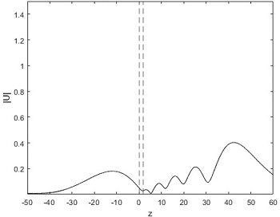
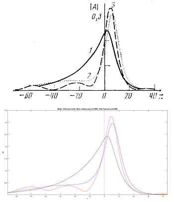
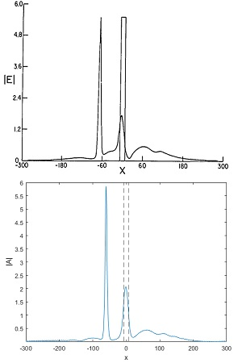
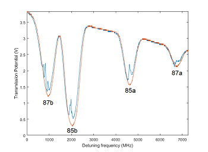
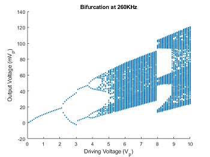

-

Nonlinear waveguide SSFM numerical simulation
This MATLAB numerical simulation utilizes the Split-Step Fourier Transform (SSFM) algorithm to numerically solve the Nonlinear Schrödinger equation (NLSE) for a TE polarized Gaussian beam propagating through a nonlinear waveguide geometry ... More
-

Reproducing Akhmediev's numerical results
Another MATLAB numerical simulation that uses the SSFM algorithm to numerically solve and simulate the NLSE in a linear-nonlinear geometry. In this case, the algorithm was used to reproduce the numerical results found by ... More
-

Reproducing Moloney's numerical results
The algorithm used for reproducing the results by Akhmediev et al. was adapted to suit the physical parameters and geometry of a study by Gubbels et al. and Moloney (1987) named “Numerical study of soliton emission from a nonlinear waveguide.” Similar to my previous project reproducing ... More
-

Doppler-free Saturated Absorption Spectroscopy of Rubidium D2 Transitions
This project was conducted as part of the Advanced Experimental Techniques physics class (PHYS 243W, Fall 2022) at the University of Rochester during my senior Fall semester. An experiment investigating the use of saturated absorption of rubidium vapor as a ... More
-

Period Doubling and Chaotic Behavior in an RLD Circuit
This project was conducted as part of the Advanced Experimental Techniques physics class (PHYS 243W, Fall 2022) at the University of Rochester during my senior Fall semester. An experiment investigating the period doubling and chaotic behavior in nonlinear systems such as a resistor-inductor-diode (RLD) circuit was implemented. Various driving voltages were ... More
- This website is still under construction... More will be added soon :)